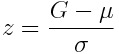
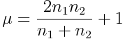
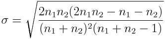

Statistics > Nonparametrics > Runs Test
This utility performs calculations for the runs test,
which is a non-parametric test that uses the number of runs
in a sequence of sample data to test for randomness in the order of the
data. A run is a sequence of data belonging to the same category.
The null hypothesis H0 of a claim is that the sequence is
random.
The alternative hypothesis H1 is that the sequence
is not random.
Each data value can be categorized into one of two separate categories.
For example, the two categories can be text descriptions
"a" and "b". For numerical data, the two categories
can be defined to be above and below a certain numerical value, such
as the mean.
Let n1 be the number of samples
belonging to the first category.
Let n2 be the number of samples
belonging to the second category.
Let G be the number of runs.
Using normal approximation, the test statistic z is

where


The two-tailed p-value and critical value are provided in the test
results.
To use the utility, you must provide the sample data in a single column
or provide the summary data.
If a sample of fewer than ten observations is used,
a note indicating the presence of small samples will be shown.
- If data samples are provided in a column, select the
Samples in one column radio button and select
the column name in the coresponding drop-down menu.
- If summarized data is provided, select the
Summarized sample data radio button and provide
the number of category 1 elements, the number of category 2 elements,
and the number of runs.
- Provide the significance level of the test (between 0 and 1).
- If data samples are provided, the Data Options panel will be
shown. Select the Categorical radio button if the samples
contain exactly two categories. If the samples contain numerical values,
select the Numerical
radio button and then
select the appropriate radio button to categorize
the numerical data into above and below the mean or a specified value.
- Click the OK button to perform the computation. The
results will be displayed in the log window.